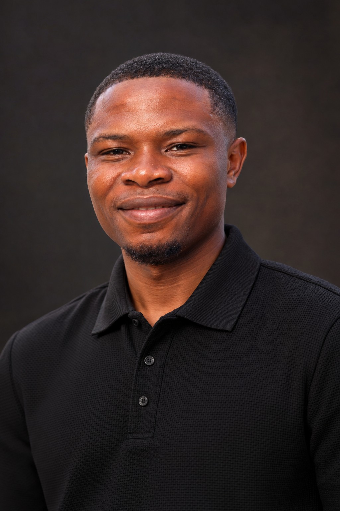

OFFICIAL MEDIA KIT
Sir Oyedot AI Creator.
Biography, approved profile links, creator portrait and selected work for interviews, collaborations and media enquiries.

Official creator portrait. Please request permission before reuse.
CREATOR FACTS
Professional identity
Creative name: Sir Oyedot AI Creator
Full name: Oyedotun Opeyemi Stephen
Based in: Ibadan, Oyo State, Nigeria
Fields: AI filmmaking, cinematic storytelling, video editing and creative education.
Short biography
Sir Oyedot AI Creator is the creative identity of Oyedotun Opeyemi Stephen, a Nigerian AI filmmaker, video editor, cinematic storyteller and educator. His portfolio includes AI-assisted historical storytelling, documentary-style productions, short-form video concepts and educational content.
Featured work
Ilé Ifẹ̀: The Dawn of a Kingdom is an AI-assisted historical storytelling series inspired by Yoruba culture. Its dramatized scenes are not archival footage.
Explore the documentary library ↗ · Browse the creative portfolio ↗
Official introductory video
Watch the creator introduction on YouTube ↗
Official profiles
YouTube · Instagram · TikTok · LinkedIn
Attribution and permissions
Credit creative work to Sir Oyedot AI Creator (Oyedotun Opeyemi Stephen). Contact the creator for permission before republishing photos, footage or artwork. For a detailed background, see the creator facts page.